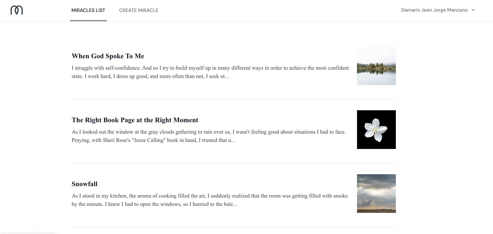
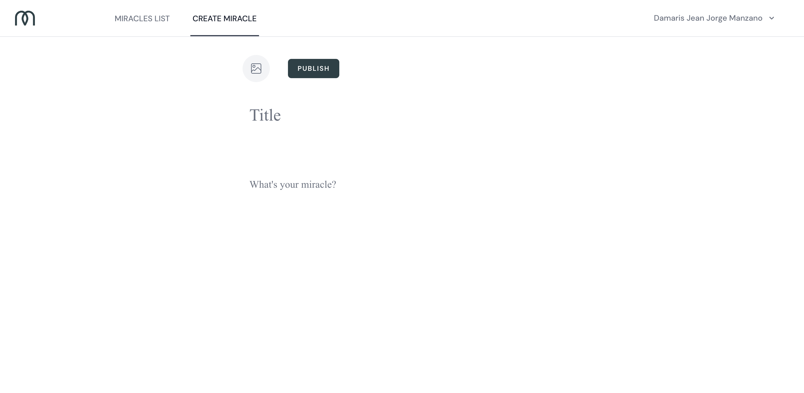
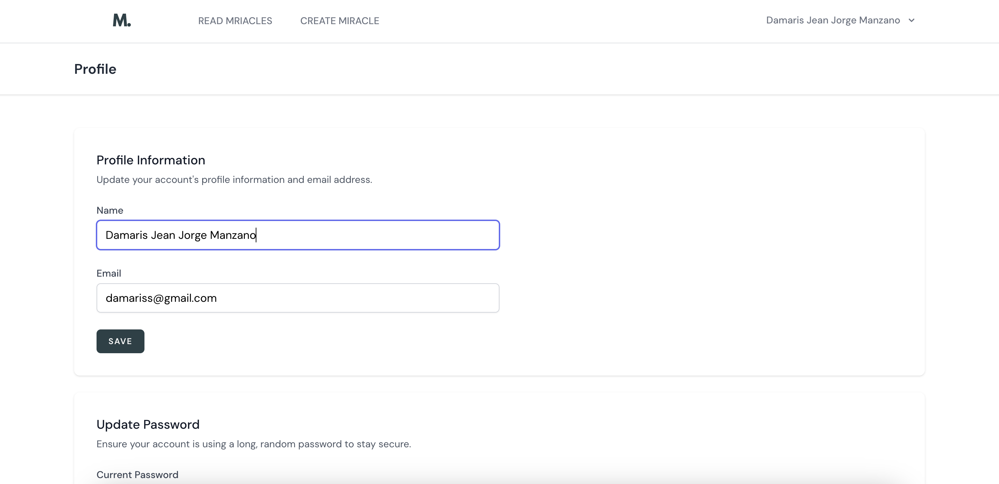

This project is a heartfelt initiative designed to create a supportive community where individuals can share their personal miracles. As a developer and a Christian, this project is both a technical achievement and a personal passion.
Technical Overview
The frontend of this project is built using React.js, complemented by Tailwind CSS for styling. This combination ensures a modern, responsive design that works seamlessly across all devices. The backend is powered by Laravel 11, a robust PHP framework, and the data is stored in a MySQL database. For secure user authentication, I've implemented Laravel Sanctum. The website is deployed on Hostinger.
One of the features of the website is the Miracles Carousel, which dynamically displays shared miracles in a visually appealing, interactive format using Framer Motion.
Component Structure
- MiraclesCarousel: The main component that brings everything together.
- MiracleItem: Represents each individual miracle within the carousel.
- CarouselNavigation: Provides navigation buttons to move through the carousel.
- CallToActionSection: Encourages users to share their own miracles.

One of the functionalities of the website is to display a list of shared miracles. This feature involves fetching data from the backend and rendering it on the frontend and providing users with a seamless experience to browse through shared miracles
Component Structure
- Miracles: The main component that fetches and displays the list of miracles.
- useFetchMiracleById: A custom hook for fetching miracle data from the backend.

This feature allows authenticated users to share their miracles by submitting a form. The form includes fields for a title, content, and an optional image.
Component Structure
- CreateMiracle: The primary component handling the form submission.
- Images: A component for image selection.
- PrimaryButton: A reusable button component for form actions.

The user profile management feature allows users to update their profile information, change their password, and delete their account.
Component Structure
UpdateProfileInformation: Handles updating user profile information.
UpdatePasswordForm: Manages the functionality for changing the user password.
DeleteUserForm: Provides the ability to delete the user account.